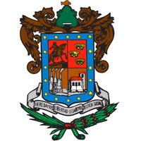

La historia de Michoacán se ha estudiado por vestigios arqueológicos y otros recursos históricos, como el manuscrito Relación de Michoacán, elaborado probablemente entre los años 1539 y 1540 por el fraile franciscano Jerónimo de Alcalá, y se sabe que los primeros pobladores del estado fueron varias tribus chichimecas que arribaron en diferentes años, y por consiguiente evolucionaron de manera diferente. Las zonas arqueológicas que se han encontrado en el estado, y que han ayudado a esclarecer la historia del nacimiento y desarrollo de las etnias que dieron herencia y esencia a la configuración cultural de Michoacán, datan del período formativo o preclásico (1500 a. C. a 200 a. C.), del clásico (200 a. C. a 800) y postclásico (800 a 1000), y entre ellos destacan: El Opeño, el Curutarán, La Villita, Tepalcatepec, Apatzingán, Zinapécuaro, Coalcomán, San Felipe de los Alzati, Tzintzuntzan, Tingambato, Pátzcuaro, Zacapu, Uruapan y Tzitzio. Gran parte del territorio michoacano estuvo habitado por los purépechas que se desarrollaron como una cultura dominante e impusieron su hegemonía económica, religiosa, militar y cultural a las demás etnias que también habitaban la región, como los nahuas, otomíes, matlatzincas o pirindas y tecos. En la región, se hablaba además del idioma tarasco o purépecha, las lenguas coacomeca, xilotlazinca, colimote, pirinda, mazahua, sayulteco, náhuatl y teca. En la actualidad los pobladores nativos de estas tierras se dan el mismo nombre que a su lengua: purhépecha, aunque también se les conoce como tarascos. La economía michoacana está conformada principalmente por los sectores comercial, siderúrgico, agrícola y pesquero. La participación de cada uno de estos en el Producto Interno Bruto estatal es del 42% para servicios sociales, comunales, hotelería y comercio; 15% para servicios financieros e inmobiliarios; 14% industria manufacturera, especialmente industria metálica básica y 11% agropecuaria y pesca. Michoacán es un estado con diversidad de atractivos en el turismo cultural y en él turismo ecológico principalmente. En el turismo cultural destacan sus ciudades históricas como la capital Morelia con su centro histórico colonial declarado Patrimonio Cultural de la Humanidad por la UNESCO en 1991, pueblos pintorescos como Pátzcuaro, que conjunta arquitectura de estilos barroco, plateresco y neoclásico, Tzintzuntzan moderno municipio que está localizado junto al lago de Pátzcuaro; Cuitzeo se localiza al norte del estado de Michoacán, es un pueblo influido por culturas como la de Teotihuacán y la Tolteca. Después formó parte del señorío Tarasco, además proviene de la palabra Cuiseo donde "cuis" significa tinaja e "itzi" agua, por lo que el nombre de esta población viene a significar "lugar de tinajas de agua", o Cuitzeo de la laguna. , Jiquilpan de Juárez, conocida como "La Ciudad de las Jacarandas", Tacámbaro entre otras construcciones sobresalientes también cuenta con la Catedral de San Jerónimo construida entre 1538 y 1570, que dio lugar a la construcción del Convento Agustino donde su viejo claustro es utilizado como Palacio Municipal y Tlalpujahua declarados Pueblos Mágicos por el gobierno federal. Celebraciones ancestrales de fama internacional como el Día de Muertos declarado Patrimonio intangible de la Humanidad por la UNESCO en 2003. Rutas turístico culturales como la Ruta Don Vasco que está conformada por una serie de poblaciones con el legado del humanista Vasco de Quiroga, así como la Ruta Minera al oriente del estado que abarca poblaciones como Angangueo, Tlalpujahua y Santa Clara del Cobre. La variedad de la cocina regional Michoacana parece no tener límites. Los tarascos, apegados como son a la tierra, han sabido aprovechar granos y frutas para crear un mundo de auténticas delicias a las que han integrado especias y carnes que vinieron con la cocina europea.
